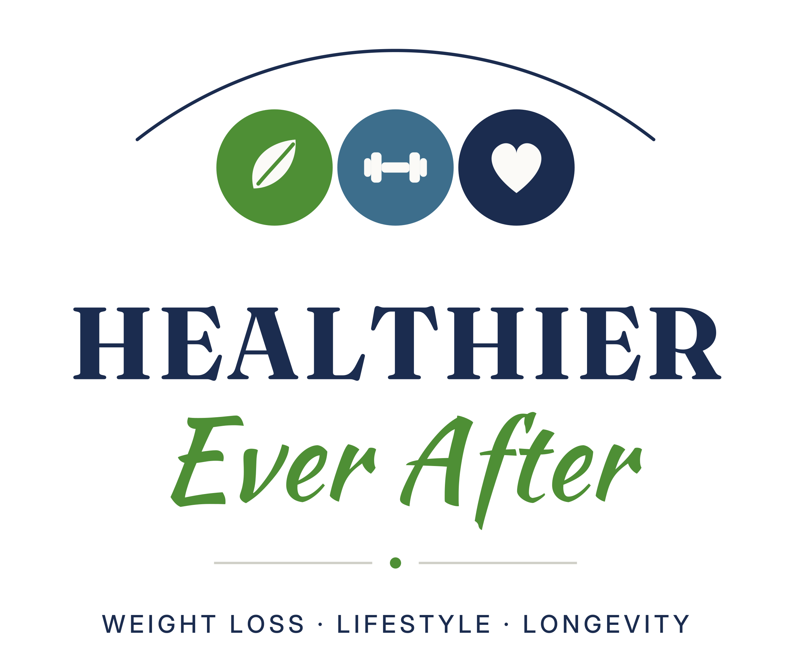

Weight loss · Lifestyle · Longevity
Healthier.
Ever after.
Real conversations about building a healthier, more sustainable life—without extremes, gimmicks, or shame.
With Rick & Greg

The show
Progress you can live with.
Drawn from live conversations, Healthier Ever After explores real-world weight loss challenges, healthy habits, and long-term wellness.
Rick and Greg bring medical insight, practical guidance, and honest conversation to nutrition, movement, mindset, behavior change, and medically guided weight loss. Whether you’re getting started or navigating a plateau, there’s a place for you here.
NutritionMovementMindsetWeight & wellnessSustainable habits
Take us with you
Your next step starts with a listen.
Choose your favorite app, or explore the full episode library on Buzzsprout.